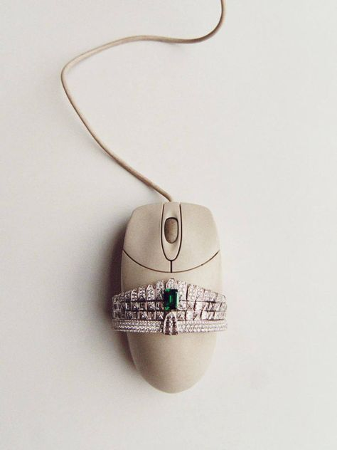
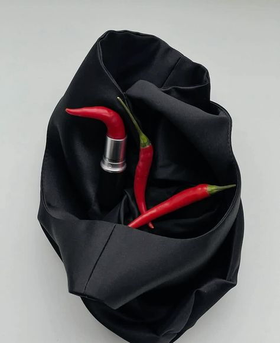
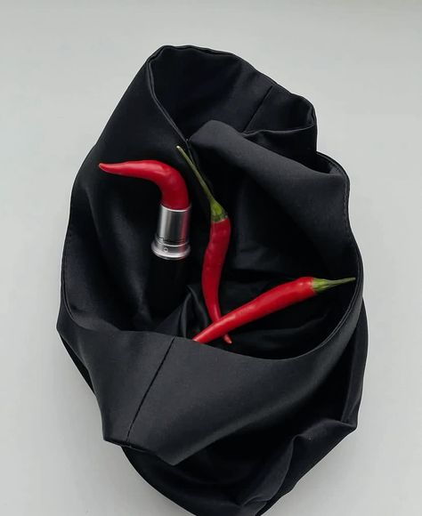
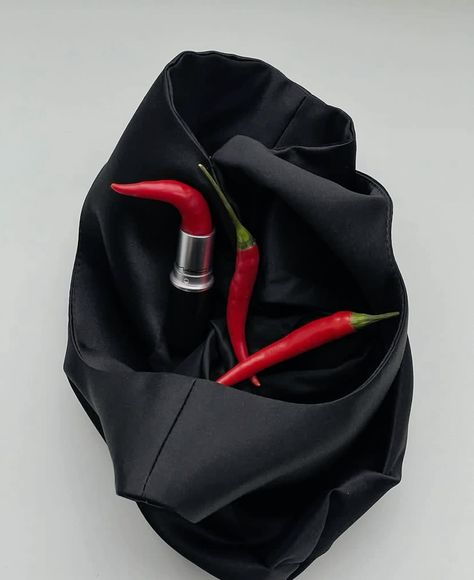

"Fashion has always been about shattering imprisonment, and conquering escapism. There is nothing sexier than embracing individuality like a boss, and unconventional fashion does it pretty well."
“Lately, we've seen a surge of unconventional materials making their way everywhere for designers to make outstanding and at the same wearable pieces of art. Some unconventional materials are zippers, dvds, safety pins and ANYTHING you think can be manipulated in such a way to apply it on a piece of clothing.”

“...often looked beyond the canon of fashion history for design inspiration and frequently consulted auction catalogues and museum collections as reference material.”
“Fashion designers are curious about shape and form, fascinated by color, intrigued by social, historical and cultural references, and therefore find themselves drawn to art galleries, to museums, to artists' studios and archives, and to simply hang out with their contemporaries in the art world, or other design disciplines.”
“While it won't exactly do a person harm, it forces others to acknowledge my existence. And though my appearance is attention-seeking, it also signals that I don't want to be approached or perceived as friendly or open to a stranger's conversation.”

Go Back

 
